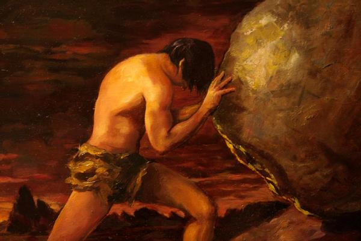

Like the glorious sound of God coming down like a lightning rod.
It’s so, so stupid, I tell myself. It’s such a basic fucking sound. Such boring, trite shit.
God, does it make me cry.
It makes me fear losing my hearing. It makes me fear losing my tongue or my eyes. It brings so much brilliant sensation, it makes me want to feel.
I don’t know. Maybe it’s just me. Maybe it reminds me of all the mornings I watched “Destroy Build Destroy” with my friends. Maybe it’s that youthful naivety, the beautiful joy found through hardship, that I just live for. But You’re Not Alone makes me undeniably emotional. I love to think about an album. But music — good music — has got to make me feel.
When Andrew W.K. says that he’s found the answer, the solution, to his personal ails and has overcome the trials life has thrown at him, I believe him.
The bright piano on "The Feeling of Being Alive" and the screaming vocals on "The Devil's on Your Side" are just part of the tapestry of songs on this album that is, for lack of a better term, absolutely epic. Honestly, this is probably the most capital E Epic album there is, thrilling and heart pounding. It makes me want to shake my fists and scream with happiness, an unavoidably shiny piece of music. Yeah, it has its flaws, but I have no doubt that it belongs on this list.
What makes an album worthy of the top one hundred? I would say that a big one is an answer, in the affirmative, to the question “Is there a situation in which I can go to this album?” You’re Not Alone is emotionally accessible and has legitimately helped me out before. Yes, again, it’s kinda cheesy. But it’s so genuine! It’s so clearly the album W.K. wanted to make. It has these big, textured drum beats, this stadium sound with blaring synths and guitars. It’s confident in its philosophy, and there is something incredible about that.
It’s an assuring album, one that says it’s okay, even necessary, to breathe and stop letting life get to you so much.
I love hills, man. You can’t get to the top until you’ve looked up from the bottom. But, even though W.K., in his shroud of white, compares life to a series of emotional roller coasters, I think his real argument, frequently emphasized by honest broetry (bro poetry), is that of the ultimate broet, Nietzsche. That time is a flat circle.
That every emotion is worthwhile and is just as important to the human experience as logic and reason. That there isn’t a left brain, right brain binary, but that these are just components of the wild human experience. That I don’t need to justify my preferences with eloquent writing, but that that writing itself is part of a greater journey of emotion.
Maybe that’s what this list is about. Not explaining, but describing. I like that.
Yeah, I don’t.